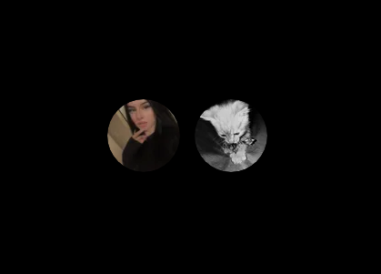

OUR PLAYLIST · WORK IN PROGRESS
Unser Soundtrack 💚
Hier sammeln sich bald eure Songs. Bis dahin: Playlist schon mal vormerken!
Playlist auf Spotify öffnen ↗LIVE AUS DEM GEBURTSTAGSKOSMOS
Ein Jahr älter, kein bisschen leiser. Ein kleines Mixtape zwischen Indie-Gefühl, Groove und ordentlich Bass — nur für dich.
22.11.2002 · 24 YEARS ON AIR ✳

DEIN SOUND · TRACKLISTE 01—04
Zwischen deutschen Indie-Zeilen und Tracks, bei denen der Groove übernimmt: hier ist ein kleiner musikalischer Gruß. Klick auf einen Act und stöber auf Spotify weiter.
BONUS TRACKS · INDIE, TECHNO & YEAT
OUR PLAYLIST · WORK IN PROGRESS
Hier sammeln sich bald eure Songs. Bis dahin: Playlist schon mal vormerken!
Playlist auf Spotify öffnen ↗BIRTHDAY SOUNDTRACK · PRESS PLAY
Drück auf Play und lass die Birthday-Vibes laufen. Spotify steuert die Wiedergabe.
Song auf Spotify öffnen ↗KLEINE ANMERKUNG
Du bringst Menschen zum Lachen, bist offen für alles und hast offenbar einen ziemlich stabilen Soundtrack fürs Leben. Bitte genau so weitermachen.
CHAT IS READY
Patch Notes: +1 Level, +100 gute Laune und ein Chat voller Birthday-Hype.
Roni auf Twitch besuchen ↗
EIN KLEINER BONUS-TRACK
Weil Geburtstage ruhig eine kleine Überraschung vertragen. Und weil du heute offiziell der Main Character bist.
Bleib so offen, lustig und wunderbar du selbst. Ich find's schön, mit dir Musik zu teilen — auf viele weitere gute Tracks, wilde Nächte und Lachflashs. 🖤
ENDE DES BROADCASTS · ABER NICHT DER MUSIK
24 steht dir. Ich hoffe, du hast einen richtig schönen Geburtstag, wirst ordentlich gefeiert und hast mindestens einen Song im Kopf, der dich nicht mehr loslässt. Bleib genau so, wie du bist.
— dein Geburtstags-Broadcast · 22.11.2026RONI'S BIRTHDAY CLUB · 22.11.2026
NO REQUESTS. JUST GOOD VIBES.
Okay Roni, jetzt wird nicht mehr diskutiert.
Ab auf die Tanzfläche. 🪩
24 YEARS · INFINITE BASS · ZERO SKIPS